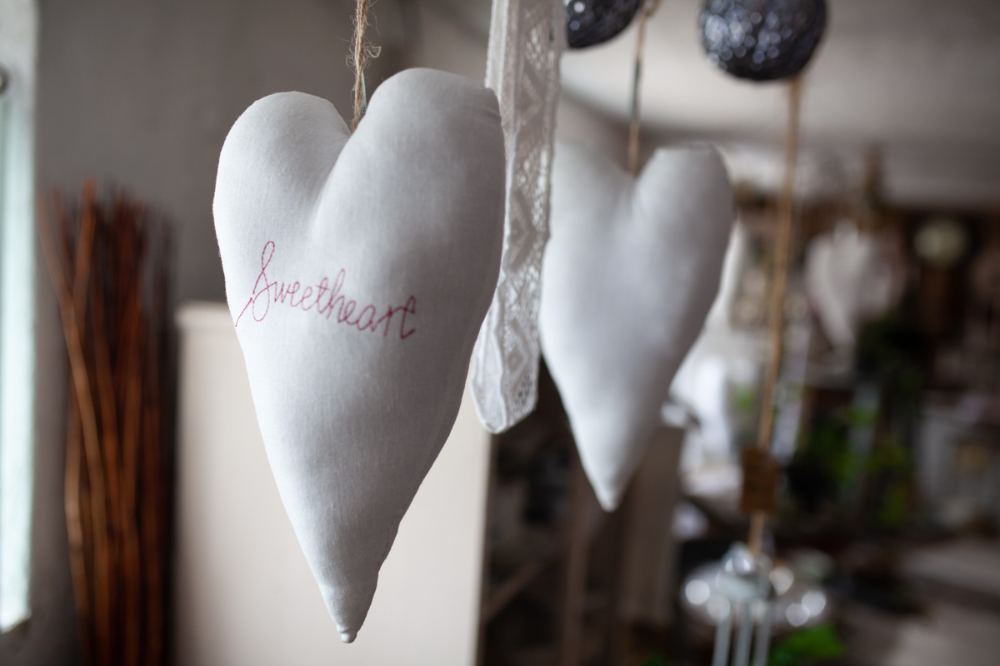
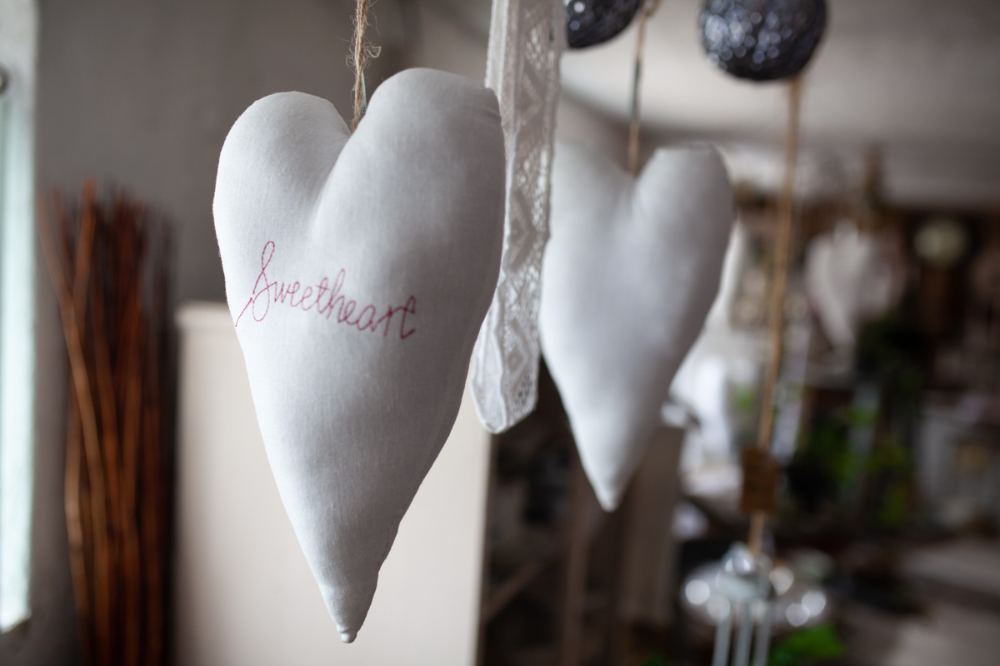

Mangler du inspiration?
Hos Lindegårdens Brugskunst finder du også farverige blomster og smukke antikke urtepotter i den franske landstil som kan skabe et dejligt romantisk miljø både ind og ude. Er du er typen som elsker at ose efter loppefund? Du synes det er hyggeligt at skabe din helt egen unikke stil og et smukt hjem, så skal du kigge forbi Birthe på Lindegården. Hos Lindegårdens Brugskunst og Blomster finder du; antikke blondeduge, romantisk brugskunst i form af antikke møbler og det er også muligt at finde loppefund online på Lindegårdens Facebook-side.
Elsker du at indrette dit hjem?
Så skal du komme og besøge Lindegårdens Brugskunst i Yding nær Skanderborg. Her er der altid kaffe på kanden og tid til en snak. Du kan selv gå rundt og suge inspiration ind ved at kigge på alle de indretningsideer Birthe har kreeret, og de er tilmed til salg, lige til at tage med hjem og skabe et hyggeligt hjørne hjemme hos dig. Birthe hjælper også gerne med at komme med ideer til romantisk indretning af dit hjem.
Bor du i den anden ende af landet, så skal du ikke snydes. Lindegården sender gerne tingene til dig.
Billedgalleri
 
